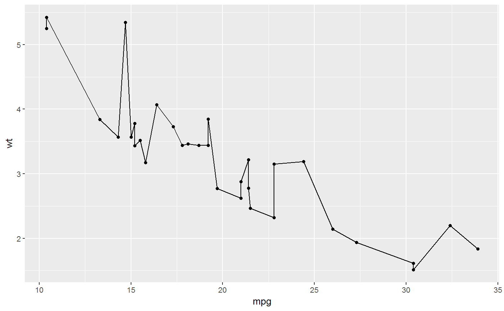
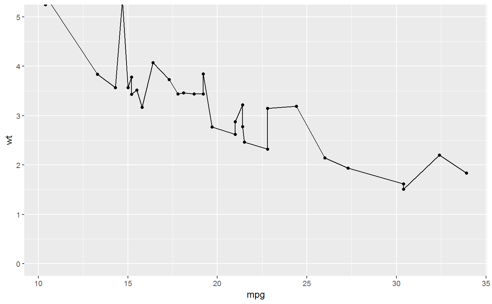
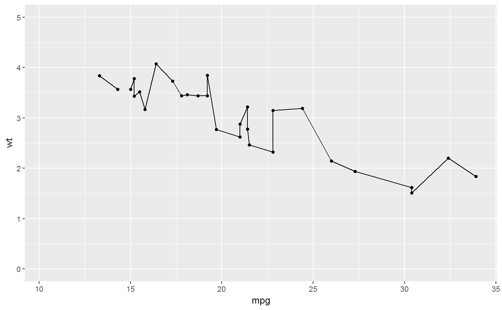

[!] Convenience functions to get and set the axis limits in ggplot2 object
[!] Convenience functions to get and set the axis limits in ggplot2 object
ggLims(obj, axis = "y", ...) # S3 method for gg ggLims(obj, axis = "y", ...) # S3 method for numeric ggLims(obj, axis = "y", ...) get_ggLims(obj, axis = "y", ...) set_ggLims(obj, axis = "y", ..., expand = TRUE)
Arguments
| obj | Eithar a ggplot object (for getting the limits) or a numeric
vector with limits (for setting the limits).
If values of limits: either vector of 2 values (min and max)
for axis indicated in |
|---|---|
| axis | (A string) either "x", "y" (default) or "xy" axis indicates axis if inerest. In case of "set_ggLims" following inputs are also possible if a list should be returned: "xy_" or "xy_list". |
| ... | For generic use. |
| expand | If |
Value
One of the following depending on inputs:
a) vector of ranges of one axis as
(min, max), or both axes as
(x_min, x_max, y_min, y_max),
b) list of limits for both axes as
list(x = (x_min, x_max), y = (y_min, y_max)
c) updated ggplot object
Details
get_ggLims(obj, "y") is a wrapper for
ggplot_build(obj)$panel$ranges[[1]]$y.range
set_ggLims(value, "y") is a wrapper for
coord_cartesian(ylim = value)
See also
Other spPlot functions for spectroscopy and hyperSpec: facet_wl,
gg_palette, ggplot.hyperSpec,
label_expr2text
Other spPlot functions for ggplot2: facet_wl,
gg_palette, ggplot.hyperSpec,
nTick
Examples
library(ggplot2) library(spPlot) obj <- qplot(mpg, wt, data = mtcars, geom = c("line","point")) # Get y axis limits ========================== get_ggLims(obj)#> [1] 1.31745 5.61955ggLims(obj)#> [1] 1.31745 5.61955ggLims(obj, "y")#> [1] 1.31745 5.61955ggLims(obj, "x")#> [1] 9.225 35.075ggLims(obj, "xy") # return as a vector#> [1] 9.22500 35.07500 1.31745 5.61955ggLims(obj, "xy_") # return as a list#> $x #> [1] 9.225 35.075 #> #> $y #> [1] 1.31745 5.61955 #># Set y .axis limits ========================== # Original plot: obj# Settim limmits this way: obj + ggLims(c(0, 5))# is the same as doing it this way: obj + ggLims(c(0, 5),"y")#> Warning: Removed 2 rows containing missing values (geom_path).#> Warning: Removed 3 rows containing missing values (geom_point).